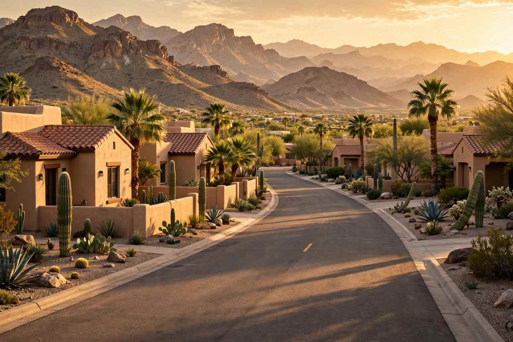

Rodent Control · Flagstaff, AZ
Fast Rodent Control in Flagstaff, AZ
If rodents have moved into your Flagstaff home or business, Murvo can help today. Our local, licensed crews provide same-day inspection, targeted removal, durable exclusion, and cleanup, all under one flat-rate written quote with a written guarantee. No hourly billing and no surprise add-ons, just rodent specialists serving Flagstaff and communities throughout Coconino County every day of the week. Local crews cover 5 ZIP codes in the Flagstaff area, from Mountainaire to the far side of Coconino County.
24/7Availability
5ZIP codes covered
Same-dayResponse
Licensed · Upfront options · Written guarantees · Fully insured
Flagstaff at a glance
Local Rodent Control for Flagstaff, AZ.
Coconino County
Countynorthern Arizona
RegionPeoria · 104 mi
Nearest metro123 miles north of Phoenix
From Phoenix5
ZIP codes covered Service by service in Flagstaff
Rodent Control Services Available in Flagstaff
Thirty rodent services, one local standard in Flagstaff: inspection-led, exclusion-first, and quoted in writing before work begins. Browse the full list for Coconino County below - each section explains what the service involves here, what it typically costs nationally, and how fast we can start.
- 01Rodent Control↗
- 02Rodent Inspection↗
- 03Rodent Removal↗
- 04Rodent Exclusion↗
- 05Rodent Proofing↗
- 06Rat Control↗
- 07Mice Control↗
- 08Mouse Removal↗
- 09Rat Removal↗
- 10Rodent Trapping↗
- 11Rodent Baiting↗
- 12Rodenticide Application↗
- 13Attic Rodent Removal↗
- 14Crawl Space Rodent Removal↗
- 15Wall Rodent Removal↗
- 16Kitchen Rodent Control↗
- 17Garage Rodent Control↗
- 18Commercial Rodent Control↗
- 19Residential Rodent Control↗
- 20Emergency Rodent Removal↗
- 21Same-Day Rodent Control↗
- 22Rodent Damage Repair↗
- 23Rodent Waste Cleanup↗
- 24Rodent Disinfection↗
- 25Rodent Odor Removal↗
- 26Dead Rodent Removal↗
- 27Rodent Dropping Cleanup↗
- 28Rodent Exclusion for Roofs↗
- 29Rodent Exclusion for Vents↗
- 30Rodent Exclusion for Chimneys↗
Rodent Control in Flagstaff
Rodent Control in Flagstaff
Droppings along baseboards, scratching after dark, or chewed packaging in Flagstaff usually mean Pack rat (Neotoma spp.) or Roof rat (Rattus rattus) have moved in, not just passing through. Murvo's rodent control starts with a full inspection, removes the animals already inside, and seals the gaps they used. You get one flat-rate written quote before work begins, backed by our written workmanship guarantee.
Homeowners in Flagstaff call Murvo for rodent control because the problem here is specific: Pack rat (Neotoma spp.) pressure around desert-edge single-family homes, historic adobe and older in-town homes, and homes with irrigated citrus landscaping, tight access at rooflines and attic vents, garage gaps, AC and pool equipment enclosures, and openings around parked vehicles and stored items, and activity that follows the local season. Our Coconino County crews diagnose the real source before recommending work, explain the options in plain language, and quote one flat rate in writing. Across Flagstaff - including Mountainaire, Kachina Village - every visit is backed by licensed, insured technicians and our written workmanship guarantee. The Flagstaff crews who handle rodent control also handle the follow-through - proofing, cleanup, and monitoring - so one visit can close the whole problem.
Our process follows five stages: Inspect, Remove, Exclude, Clean, and Monitor. Active animals are cleared with targeted trapping matched to the species, then openings around pipes, vents, and rooflines are sealed with copper mesh, hardware cloth, and metal flashing. Contaminated areas are cleaned safely, and monitoring visits confirm activity has stopped before we sign the job off. A technician first checks the attic, crawl space, garage, and kitchen, recording droppings, nests, gnaw marks, and entry gaps with photos. You approve every stage in advance, in writing.
When you call, tell us what you have seen and when the noises happen. That detail shapes the first visit. Your technician arrives as scheduled, inspects, and lays out findings before quoting. Once you approve, trapping and sealing are booked in sequence, monitoring is scheduled, and the guarantee is left with you in writing at completion. Keep the visit notes we leave behind; together they form a clear record of findings, approvals, completed work, and the monitoring results that closed the job.
Need help quickly in Flagstaff? Call any time — the emergency line is staffed 24/7, and same-day rodent control appointments are available in most areas. We inspect first, explain the plan in plain language, and put the flat rate in writing before work starts. In Coconino County, most cases involve the Pack rat (Neotoma spp.) and the Roof rat (Rattus rattus), so the inspection focuses on their routes first.
Murvo does not quote rodent control sight unseen, because species, activity, and sealing needs change the work involved. After inspection you get one flat-rate written quote, and that is the figure you pay. As national context only, Angi's 2026 figures put rat and mouse removal and control at an average of $396, with a typical range of $189 to $655 — a benchmark, not a Murvo price.
Rodent Inspection in Flagstaff
Rodent Inspection in Flagstaff
What should you expect to hold afterwards? Photographs, a species identification, a map of entry points, and priorities you can act on in stages. That is a Murvo rodent inspection in Flagstaff: licensed and insured, unhurried, and honest about separating urgent problems from minor weaknesses that can safely wait.
Homeowners in Flagstaff call Murvo for rodent inspection because the problem here is specific: Pack rat (Neotoma spp.) pressure around desert-edge single-family homes, historic adobe and older in-town homes, and homes with irrigated citrus landscaping, tight access at rooflines and attic vents, garage gaps, AC and pool equipment enclosures, and openings around parked vehicles and stored items, and activity that follows the local season. Our Coconino County crews diagnose the real source before recommending work, explain the options in plain language, and quote one flat rate in writing. Across Flagstaff - including Mountainaire, Kachina Village - every visit is backed by licensed, insured technicians and our written workmanship guarantee. The Flagstaff crews who handle rodent inspection also handle the follow-through - proofing, cleanup, and monitoring - so one visit can close the whole problem.
Timing often tells the story first. They check wiring and insulation for damage, test whether gaps at rooflines and attic vents, garage gaps, AC and pool equipment enclosures, and openings around parked vehicles and stored items are active, and mark each opening by size and species. The written report that follows ranks repairs clearly, so decisions rest on findings rather than guesswork or pressure. Noises at dusk suggest one pattern; droppings near stored food suggest another. Technicians use what you report to focus the search, then verify it against physical evidence throughout desert-edge single-family homes, historic adobe and older in-town homes, and homes with irrigated citrus landscaping. Each recommendation in that report traces back to a photographed finding, keeping the whole assessment accountable.
To book, call any time; urgent inspections are answered 24/7. On the day, your technician works through the property methodically, reviews photographs with you on site, and leaves written findings plus any quote before departing. We agree a window, note where you have noticed signs, and confirm access to the attic and crawl space. You keep the report either way, and it remains useful for staging repairs later or comparing conditions at a future seasonal check.
You do not have to wait days for answers in Flagstaff. Same-day rodent inspection appointments are available in most areas, urgent calls are taken 24/7, and most home inspections take under an hour. You finish the visit with photos, written findings, and flat-rate pricing for anything we recommend. The written quote for your Flagstaff property will spell out exactly which of these applies before any work starts.
Nationally, a professional rodent inspection typically runs $100 to $200 according to Angi's 2026 data, and it is often credited toward the job if you proceed. Murvo confirms your exact rodent inspection price before the visit and quotes any follow-up work as a flat rate in writing after inspection, so the figure you approve is the figure you pay, with no hourly billing.
Rodent Removal in Flagstaff
Rodent Removal in Flagstaff
How quickly should you act once droppings appear in living areas? Promptly, because contamination builds daily and young rodents mature fast. Murvo responds with licensed, insured, background-checked technicians who remove animals hygienically, explain when each room is safe again, and back the completed removal with a written workmanship guarantee.
Homeowners in Flagstaff call Murvo for rodent removal because the problem here is specific: Pack rat (Neotoma spp.) pressure around desert-edge single-family homes, historic adobe and older in-town homes, and homes with irrigated citrus landscaping, tight access at rooflines and attic vents, garage gaps, AC and pool equipment enclosures, and openings around parked vehicles and stored items, and activity that follows the local season. Our Coconino County crews diagnose the real source before recommending work, explain the options in plain language, and quote one flat rate in writing. Across Flagstaff - including Mountainaire, Kachina Village - every visit is backed by licensed, insured technicians and our written workmanship guarantee. In Flagstaff, rodent removal calls most often involve desert-edge single-family homes, historic adobe and older in-town homes, and homes with irrigated citrus landscaping, where rooflines and attic vents, garage gaps, AC and pool equipment enclosures, and openings around parked vehicles and stored items decide whether the fix holds.
Removal starts with an assessment of species, numbers, and access routes across attics, wall voids, garages, and kitchens. Catch records show progress clearly instead of relying on guesswork. Removal is followed immediately by entry-point exclusion, because new rodents will replace removed ones through any gap left open, and disinfection is arranged after heavy activity. Once you approve the written quote, technicians set traps along proven runways, check them on schedule, and remove animals promptly and hygienically. Photos document each stage for you.
Call, describe the signs, and we will set a visit window, often for the same day. Return visits are already booked, so clearing, resetting, and progress updates happen without you chasing anyone for news. The first appointment confirms species and numbers, explains the trapping sequence, and produces your written quote. With approval, traps go in immediately. Photographs and catch records are shared as the program runs, giving you visible proof of progress rather than a verbal summary at the end.
For active infestations in Flagstaff, rodent removal can usually start the same day you call, and our team answers 24/7 when a rodent is loose in a living area. The first visit confirms activity and sets traps straight away; return visits then clear and reset them until monitoring shows the property is completely clear. In Coconino County, most cases involve the Pack rat (Neotoma spp.) and the Roof rat (Rattus rattus), so the inspection focuses on their routes first.
Cost depends on the species, how many animals are active, and how much sealing the home needs afterwards, so Murvo inspects first and quotes one flat rate in writing. For national context only, Angi's 2026 data averages rat and mouse removal at $396, typically $189 to $655. That benchmark is not a Murvo price; your written quote is the exact figure.
Rodent Exclusion in Flagstaff
Rodent Exclusion in Flagstaff
In desert-edge single-family homes, historic adobe and older in-town homes, and homes with irrigated citrus landscaping, exclusion is detective work as much as building work. Rub marks at rooflines and attic vents, garage gaps, AC and pool equipment enclosures, and openings around parked vehicles and stored items, droppings below a vent, and daylight under a door each point somewhere different in Coconino County homes. Our technicians follow those clues for Pack rat (Neotoma spp.) and Roof rat (Rattus rattus), prioritize active openings, and leave inactive weaknesses clearly noted.
When you need rodent exclusion in Flagstaff, the job starts with what is actually happening in your part of Coconino County. Murvo crews work Flagstaff every week, so they know how Pack rat (Neotoma spp.) and Roof rat (Rattus rattus) behave around desert-edge single-family homes, historic adobe and older in-town homes, and homes with irrigated citrus landscaping here - and where they get in: rooflines and attic vents, garage gaps, AC and pool equipment enclosures, and openings around parked vehicles and stored items. We arrive equipped for the full job, confirm the flat rate in writing before work begins, and cover the whole Flagstaff area, including Mountainaire, Kachina Village. No call-center runaround and no open-ended hourly billing - just a local crew, a clear plan, and a written quote you approve first. In Flagstaff, rodent exclusion calls most often involve desert-edge single-family homes, historic adobe and older in-town homes, and homes with irrigated citrus landscaping, where rooflines and attic vents, garage gaps, AC and pool equipment enclosures, and openings around parked vehicles and stored items decide whether the fix holds.
Exclusion begins with a full exterior survey, paying particular attention to junctions where different materials meet, because those seams and transitions open up as a building ages and settles. Door sweeps are fitted, pipe gaps closed, and specialist roof, vent, and chimney sealing finished to weatherproof standards. Each opening is sealed with materials matched to it: copper mesh packed into gaps, hardware cloth over vents, metal flashing at roof junctions, and quality sealants for smaller cracks. Active animals are trapped out first.
Before sealing day, confirm pets are secured and access to the roofline and foundation is clear. The crew then works through the agreed list, checks that no animals remain inside, and fits each seal cleanly. Afterwards you receive the photographs, the guarantee, and a date for the follow-up check that confirms everything is holding as intended. If monitoring ever finds fresh activity at a sealed point, that written inventory tells us exactly what to inspect first.
The first step is a survey, and in Flagstaff we can often schedule that survey the same day you call about rodent exclusion. Sealing follows once active animals are cleared — nothing is ever sealed inside — and most homes are fully sealed within days, with entry points near wiring or food areas handled first. That is also why Murvo pairs removal with exclusion in Flagstaff - treating the animal without closing rooflines and attic vents, garage gaps, AC and pool equipment enclosures, and openings around parked vehicles and stored items rarely lasts.
For national context, Angi's 2026 data puts basic exclusion at $200 to $600, depending on access and the number of openings. That is a benchmark, not a Murvo price. After surveying your Flagstaff home, we list every opening that needs sealing and quote one flat rate in writing, so you pay for the work your property actually needs and nothing more.
Rodent Proofing in Flagstaff
Rodent Proofing in Flagstaff
When is the right season for rodent proofing in Flagstaff? Before cold weather sends rodents searching for indoor warmth, though any quiet month works well. Our licensed, insured technicians harden the structure, advise on food storage and vegetation, and leave a seasonal re-check booked, all backed by a written workmanship guarantee.
When you need rodent proofing in Flagstaff, the job starts with what is actually happening in your part of Coconino County. Murvo crews work Flagstaff every week, so they know how Pack rat (Neotoma spp.) and Roof rat (Rattus rattus) behave around desert-edge single-family homes, historic adobe and older in-town homes, and homes with irrigated citrus landscaping here - and where they get in: rooflines and attic vents, garage gaps, AC and pool equipment enclosures, and openings around parked vehicles and stored items. We arrive equipped for the full job, confirm the flat rate in writing before work begins, and cover the whole Flagstaff area, including Mountainaire, Kachina Village. No call-center runaround and no open-ended hourly billing - just a local crew, a clear plan, and a written quote you approve first. Coverage for rodent proofing spans 5 ZIP codes in Coconino County, including 86001, 86002, 86011.
Proofing starts with a whole-property assessment inside and out, from overhanging branches and cluttered garages to unsealed vents and gaps under doors. We also address attractants: securing pet food and bird seed storage, trimming vegetation away from walls, and clearing harborage. Every item is prioritized so essential work happens first. The plan typically combines structural sealing of utility entries and foundation cracks with mesh screening on vents, chimneys, and rooflines, plus door sweeps where light shows underneath. Photos show each weakness we find.
Arrange a survey at a time that suits you; there is no emergency, so scheduling stays relaxed. You then receive a written quote separating essential work from optional improvements, and nothing proceeds without your say-so. Your technician walks every side of the property with you, photographs weak points, and talks through the plan in plain language. Staging the work is fine; essential sealing can proceed first while optional improvements wait until a season or budget that suits you better.
Rodent proofing is preventive, so there is rarely a rush, but surveys in Flagstaff can often be arranged the same day you call, and always within a few days. Most proofing work is completed in a single visit once you approve the plan, and booking before colder weather gives your home protection ahead of the seasonal rush indoors. Murvo's Flagstaff crews explain the finding either way, and the flat-rate quote leaves the decision with you.
We survey your Flagstaff property first, separate the quick wins you can handle yourself from the specialist sealing, and quote the professional work as one flat rate in writing so spending can be staged. Angi's 2026 national context puts exclusion, the core of proofing, at $200 to $600 for basic work — a benchmark only, not a Murvo price.
Rat Control in Flagstaff
Rat Control in Flagstaff
What separates control from a temporary lull? Monitoring that continues after the last catch. Murvo keeps checking until routes stay quiet, removes trapped rats hygienically, and finishes with exclusion so replacements cannot follow the same path. Licensed, insured technicians document every visit, and urgent calls are answered 24/7.
Homeowners in Flagstaff call Murvo for rat control because the problem here is specific: Pack rat (Neotoma spp.) pressure around desert-edge single-family homes, historic adobe and older in-town homes, and homes with irrigated citrus landscaping, tight access at rooflines and attic vents, garage gaps, AC and pool equipment enclosures, and openings around parked vehicles and stored items, and activity that follows the local season. Our Coconino County crews diagnose the real source before recommending work, explain the options in plain language, and quote one flat rate in writing. Across Flagstaff - including Mountainaire, Kachina Village - every visit is backed by licensed, insured technicians and our written workmanship guarantee. Homes near Mountainaire tend to show activity first in Flagstaff, which is why inspections start with rooflines and attic vents, garage gaps, AC and pool equipment enclosures, and openings around parked vehicles and stored items.
Wary rats punish rushed trapping, so the program begins with patience. Unset traps are placed on confirmed runways and pre-baited until feeding becomes confident and regular. Only then are traps set, checked frequently, and repositioned as the pattern shifts. Catches are recorded by location, giving a clear picture of colony size and movement. Exclusion follows at rooflines and entry points, and monitoring devices remain in place afterwards to verify that quiet routes have genuinely stayed quiet. Counts matter here, because a falling catch trend tells a different story from a single lucky night.
Between visits, keep pet food secured and avoid moving any traps, even slightly, since position matters. The program closes only when monitoring confirms activity has ended and exclusion is finished, with your guarantee confirmed in writing at sign-off. Your background-checked technician returns on schedule, removes trapped rats promptly, adjusts placements, and reports counts plainly. Keep gates and access points available on scheduled days where possible, since uninterrupted checks keep the program on its planned timetable.
Call day or night — urgent rat control calls in Flagstaff are answered 24/7, and a same-day inspection can usually start the program. Pre-baiting begins on that first visit once you approve the written quote, traps are set when rats are feeding confidently, and scheduled checks continue until activity stops. If you are seeing signs now, an inspection this week is the fastest way to know which situation you are in.
Species, colony size, and the number of entry points to seal all affect rat work, which is why Murvo inspects first and quotes one flat rate in writing. Angi's 2026 figures, given for national context only, average rat control and removal at $396 and typically run $189 to $655; the written quote for your Flagstaff home is the exact price.
Mice Control in Flagstaff
Mice Control in Flagstaff
Most Flagstaff mouse problems announce themselves in the kitchen first: droppings in a drawer, a chewed corner on stored food, movement behind the kickboard. Murvo surveys those hotspots, clusters traps where mice actually travel, seals gaps, and covers the program with one flat-rate written quote approved in advance.
When you need mice control in Flagstaff, the job starts with what is actually happening in your part of Coconino County. Murvo crews work Flagstaff every week, so they know how Pack rat (Neotoma spp.) and Roof rat (Rattus rattus) behave around desert-edge single-family homes, historic adobe and older in-town homes, and homes with irrigated citrus landscaping here - and where they get in: rooflines and attic vents, garage gaps, AC and pool equipment enclosures, and openings around parked vehicles and stored items. We arrive equipped for the full job, confirm the flat rate in writing before work begins, and cover the whole Flagstaff area, including Mountainaire, Kachina Village. No call-center runaround and no open-ended hourly billing - just a local crew, a clear plan, and a written quote you approve first. Around Mountainaire, Kachina Village, Doney Park, the pattern is similar: Roof rat (Rattus rattus) finds rooflines and attic vents, garage gaps, AC and pool equipment enclosures, and openings around parked vehicles and stored items first, and lasting mice control has to close those routes.
Our integrated approach favors trapping and sealing over baits, with genuinely pet-safe options for family homes. Food-storage advice removes the attraction that drew mice in, and sealing is completed as whole-home proofing so kitchens, attics, and voids stay clear after the program ends. Droppings in cabinets are never dry-swept; following CDC guidance, surfaces are disinfected first so contamination is not spread into the air, and nesting debris is bagged and removed. Catch records show exactly how numbers fall each visit.
During the program, store opened food in sealed containers and keep trap areas undisturbed. At the end you review the catch record together, receive prevention advice, and confirm the written guarantee before close. Your background-checked technician returns to clear and reset clusters, adjusts placements if the pattern shifts, and completes sealing once numbers fall. Prevention notes cover the exact storage and sealing issues found at your home, making them practical rather than generic advice.
Mice programs move quickly in Flagstaff: a mice control survey can often be arranged the same day you call, and traps are set on that first visit once you approve the quote. Because mice investigate new objects fast, catches usually begin quickly, and scheduled check visits follow until a final confirmation shows activity has fully stopped. Murvo's Flagstaff crews explain the finding either way, and the flat-rate quote leaves the decision with you.
Mouse work is priced by the number of rooms affected and the amount of sealing involved, so Murvo surveys first and quotes one flat rate in writing. For national context only, Angi's 2026 data averages rat and mouse control and removal at $396, typically $189 to $655. That is not a Murvo price; your written quote is exact.
Mouse Removal in Flagstaff
Mouse Removal in Flagstaff
In desert-edge single-family homes, historic adobe and older in-town homes, and homes with irrigated citrus landscaping, warmth decides where mice settle: near boilers, behind appliances, inside kitchen cabinets, and along rooflines and attic vents, garage gaps, AC and pool equipment enclosures, and openings around parked vehicles and stored items routes across Coconino County. Our mouse removal checks those warm pockets deliberately, including spots homeowners rarely open, so a hidden nest raising young does not survive to restart the problem weeks later.
Homeowners in Flagstaff call Murvo for mouse removal because the problem here is specific: Pack rat (Neotoma spp.) pressure around desert-edge single-family homes, historic adobe and older in-town homes, and homes with irrigated citrus landscaping, tight access at rooflines and attic vents, garage gaps, AC and pool equipment enclosures, and openings around parked vehicles and stored items, and activity that follows the local season. Our Coconino County crews diagnose the real source before recommending work, explain the options in plain language, and quote one flat rate in writing. Across Flagstaff - including Mountainaire, Kachina Village - every visit is backed by licensed, insured technicians and our written workmanship guarantee. Around Mountainaire, Kachina Village, Doney Park, the pattern is similar: Roof rat (Rattus rattus) finds rooflines and attic vents, garage gaps, AC and pool equipment enclosures, and openings around parked vehicles and stored items first, and lasting mouse removal has to close those routes.
Trap-based removal is the default here for practical reasons. It is safer around children and pets, results are visible and countable, and no animal is left to die inside a hidden void. Cleanup follows the same care: droppings and nesting are never dry-swept, surfaces are disinfected first, and waste is bagged and removed hygienically. Once activity ends, access points are sealed thoroughly, and advice on storage and scent-trail cleaning helps the kitchen stay clear. Monitoring after sealing confirms the finish, so the result rests on evidence rather than a hopeful guess.
As catches fall, the focus shifts in order: final clearing, disinfection of affected areas, then sealing of access points. Seasonal proofing can be arranged if your property has repeated fall problems. Your technician reviews the catch record with you at sign-off, confirms which rooms are fully safe to use, and leaves prevention advice plus guarantee paperwork. If signs reappear during monitoring, placements are restored under the same agreed program rather than starting a new conversation from scratch.
In Flagstaff, mouse removal can often begin the same day you call, especially where mice are active in kitchens or living areas. The first visit surveys nesting sites and sets traps immediately after you approve the quote; because mice investigate traps quickly, catches usually start fast, and return visits continue until numbers reach zero. In Coconino County, activity follows the local season, so timing the work matters as much as the method.
Rooms involved and sealing needed determine the cost of removal, so we survey first and agree a flat rate in writing before work begins. As national context only, Angi's 2026 data averages rat and mouse removal at $396, with a typical range of $189 to $655; that benchmark is not a Murvo price, and your written quote covers your exact program.
Rat Removal in Flagstaff
Rat Removal in Flagstaff
In desert-edge single-family homes, historic adobe and older in-town homes, and homes with irrigated citrus landscaping, where rats enter decides how removal unfolds. Roof-level access through rooflines and attic vents, garage gaps, AC and pool equipment enclosures, and openings around parked vehicles and stored items points toward attic work; ground burrows suggest basements and drains across Coconino County. Our licensed technicians trace the whole route for Pack rat (Neotoma spp.) and Roof rat (Rattus rattus), remove the colony, and sanitize areas where nests contaminated insulation or stored items.
When you need rat removal in Flagstaff, the job starts with what is actually happening in your part of Coconino County. Murvo crews work Flagstaff every week, so they know how Pack rat (Neotoma spp.) and Roof rat (Rattus rattus) behave around desert-edge single-family homes, historic adobe and older in-town homes, and homes with irrigated citrus landscaping here - and where they get in: rooflines and attic vents, garage gaps, AC and pool equipment enclosures, and openings around parked vehicles and stored items. We arrive equipped for the full job, confirm the flat rate in writing before work begins, and cover the whole Flagstaff area, including Mountainaire, Kachina Village. No call-center runaround and no open-ended hourly billing - just a local crew, a clear plan, and a written quote you approve first. Around Mountainaire, Kachina Village, Doney Park, the pattern is similar: Roof rat (Rattus rattus) finds rooflines and attic vents, garage gaps, AC and pool equipment enclosures, and openings around parked vehicles and stored items first, and lasting rat removal has to close those routes.
Removal stays trap-led and exclusion-backed throughout. Monitoring devices and a documented final walkthrough then prove activity has ended, and proofing advice covers drains, vents, and rooflines going forward. Locked bait stations appear only where a site genuinely justifies them, positioned away from pets and food, labeled, and monitored on schedule; loose bait is never used. After clearance, contaminated areas are sanitized carefully, with surfaces disinfected before cleaning and droppings never dry-swept. That written evidence stays with you, including the monitoring readings that supported the decision to sign off.
After booking, we confirm access needs for the attic, basement, or outbuildings so no time is wasted. A final monitoring period confirms the home is clear before sign-off. On the first visit, your background-checked technician sets out the plan and begins pre-baiting once you approve the written quote. Follow-up visits run on schedule until catches stop, then sealing and sanitation are completed. Progress is reported to you after every single visit.
In Flagstaff, rat removal can usually start the same day you call, with 24/7 answering for rats active in living areas. Pre-baiting begins on the first visit after you approve the written quote, and traps are set once rats feed confidently, typically within days. Repeat visits then run frequently until monitoring confirms the colony is gone. In Coconino County, activity follows the local season, so timing the work matters as much as the method.
Colony size, access, and the sealing needed afterwards drive the price, so Murvo assesses the property first and quotes a flat rate in writing covering the full program. Angi's 2026 data, for national context only, averages rat removal at $396 and typically ranges from $189 to $655; that is a benchmark, not a Murvo price.
Rodent Trapping in Flagstaff
Rodent Trapping in Flagstaff
Most Flagstaff trapping programs succeed or fail on placement, not equipment. Murvo maps runways from droppings and rub marks first, then positions traps perpendicular to walls and along beams and pipes where rodents genuinely travel. You approve one flat-rate written quote covering the program and its check visits.
In Flagstaff, rodent trapping is not a generic spray-and-go service. Rodents exploit rooflines and attic vents, garage gaps, AC and pool equipment enclosures, and openings around parked vehicles and stored items in desert-edge single-family homes, historic adobe and older in-town homes, and homes with irrigated citrus landscaping, and a fix that ignores those routes does not last. Murvo's Flagstaff team inspects first, shows you the evidence - droppings, gnaw marks, entry gaps - and then lays out the work with a flat-rate written quote. We serve all of Coconino County from Flagstaff, including Mountainaire, Kachina Village, and every job is covered by our written workmanship guarantee. Seasonal timing matters for rodent trapping in Flagstaff: Rodents in Flagstaff peak twice: in attics during summer heat and again in winter.
A trapping program starts with inspection: identifying the species, mapping runways, and finding where droppings and rub marks show real travel. Traps are set perpendicular to walls and along beams, pipes, and fence lines, matched to the setting. For rats, we pre-bait unset traps for several days, a step most DIY attempts skip, then set them for maximum effect. Mice receive clustered traps at hotspots. Technicians return on schedule to clear, reset, and record every catch. Placements shift as activity patterns change.
Book rodent trapping in Flagstaff and a technician can often start the same day. The first visit inspects, maps activity, and places or pre-baits traps; you approve a flat-rate written quote covering the program including check visits before we proceed. Scheduled returns clear and reset traps and share catch records with you. When numbers reach zero, we confirm monitoring is clear and discuss sealing. The finished program is guaranteed in writing.
In Flagstaff, a rodent trapping program can usually start the same day you call, with traps placed or pre-baiting begun on the first visit after you approve the quote. Mice often investigate within the first night, while wary rats need a few days of pre-baiting before traps are set. Scheduled checks then keep the program moving until numbers reach zero. In Coconino County, most cases involve the Pack rat (Neotoma spp.) and the Roof rat (Rattus rattus), so the inspection focuses on their routes first.
Rather than charging by the trap or by the visit, Murvo inspects first and quotes rodent trapping as one flat rate in writing for the complete program, including its check visits. Price depends on species, activity level, and how many checks are needed, and there is no hourly billing at any stage, so there are no per-visit surprises.
Rodent Baiting in Flagstaff
Rodent Baiting in Flagstaff
State rules shape how baiting works in Arizona: some states restrict anticoagulant rodenticides, and Murvo follows the strictest applicable limits on every job. Before any station is placed at your Flagstaff property, a technician maps activity, reviews pet and child concerns with you, and explains exactly what to watch for between monitoring visits. Nothing is placed without that conversation.
Homeowners in Flagstaff call Murvo for rodent baiting because the problem here is specific: Pack rat (Neotoma spp.) pressure around desert-edge single-family homes, historic adobe and older in-town homes, and homes with irrigated citrus landscaping, tight access at rooflines and attic vents, garage gaps, AC and pool equipment enclosures, and openings around parked vehicles and stored items, and activity that follows the local season. Our Coconino County crews diagnose the real source before recommending work, explain the options in plain language, and quote one flat rate in writing. Across Flagstaff - including Mountainaire, Kachina Village - every visit is backed by licensed, insured technicians and our written workmanship guarantee. Around Mountainaire, Kachina Village, Doney Park, the pattern is similar: Roof rat (Rattus rattus) finds rooflines and attic vents, garage gaps, AC and pool equipment enclosures, and openings around parked vehicles and stored items first, and lasting rodent baiting has to close those routes.
Where baiting is not appropriate indoors, we say so, and recommend trapping first followed by proofing of gaps around pipes, vents, and doors. That exclusion-first approach reduces reliance on bait over time, which matters for households with children, pets, or visiting wildlife in Flagstaff. Consumption records from each visit show whether activity is falling, holding, or moving, guiding whether stations stay, move, or come out entirely in favor of sealing and trapping alone. You receive those records after every monitoring visit.
Booking starts with a conversation about pets, children, and wildlife on your property, because that shapes placement before we arrive. The inspection visit maps activity, agrees each proposed station location with you, and confirms the written quote. Approved stations are installed locked and labeled that visit, with monitoring dates booked before we leave. Nothing about placement, product type, or monitoring frequency is left vague, and you can ask for the record at any point.
In Flagstaff, rodent baiting starts with an inspection visit we can often arrange the same day you call. Stations are only placed after activity is mapped and you approve the written quote and each location, so setup is deliberate rather than rushed. Monitoring visits then run on a fixed schedule until consumption stops and activity is confirmed clear. That is also why Murvo pairs removal with exclusion in Flagstaff - treating the animal without closing rooflines and attic vents, garage gaps, AC and pool equipment enclosures, and openings around parked vehicles and stored items rarely lasts.
How many locked stations your property needs and how long monitoring runs determine the cost, so Murvo inspects and maps activity first, then quotes one flat rate in writing covering placement and scheduled checks. There are no per-visit surprises, and because the approach is exclusion-first, the aim is to reduce and eventually remove stations rather than maintain them forever.
Rodenticide Application in Flagstaff
Rodenticide Application in Flagstaff
Our approach in Flagstaff is exclusion-first: seal entry points, trap active animals, and shrink the need for chemical control quickly. Where rodenticide application is genuinely justified for Pack rat (Neotoma spp.) or Roof rat (Rattus rattus), a licensed technician maps, labels, and anchors every station, records amounts at each visit, and retrieves dead rodents promptly where accessible to reduce odor and secondary risks.
In Flagstaff, rodenticide application is not a generic spray-and-go service. Rodents exploit rooflines and attic vents, garage gaps, AC and pool equipment enclosures, and openings around parked vehicles and stored items in desert-edge single-family homes, historic adobe and older in-town homes, and homes with irrigated citrus landscaping, and a fix that ignores those routes does not last. Murvo's Flagstaff team inspects first, shows you the evidence - droppings, gnaw marks, entry gaps - and then lays out the work with a flat-rate written quote. We serve all of Coconino County from Flagstaff, including Mountainaire, Kachina Village, and every job is covered by our written workmanship guarantee. Homes near Mountainaire tend to show activity first in Flagstaff, which is why inspections start with rooflines and attic vents, garage gaps, AC and pool equipment enclosures, and openings around parked vehicles and stored items.
Monitoring data guides the whole treatment: whether it continues, changes product, or stops entirely in favor of proofing alone. We prioritize sealing entry points with exclusion and physical removal so dependence on chemical control shrinks visit by visit. Dead rodents are retrieved promptly where accessible, stations are kept away from pet and child areas, and every product used is documented with its label and safety information, so nothing applied at your property is ever hidden from you. State restrictions are checked before product selection.
After booking, we discuss children, pets, livestock, and wildlife at your property before the visit, so product decisions are informed from the start. Scheduled checks follow, amounts are recorded and reported, and stations are removed when activity is confirmed clear. On arrival, your background-checked technician inspects, talks you through the plan and label information, and only applies product once you approve the written quote. Safety information stays with you throughout the program.
In Flagstaff, rodenticide application begins with an inspection we can often schedule the same day you call, because no responsible application happens without one. If treatment is justified and you approve the written quote, locked stations are installed on that visit. Monitoring then runs on schedule, and treatment stops as soon as data shows activity has ended. Murvo's Flagstaff crews explain the finding either way, and the flat-rate quote leaves the decision with you.
Application cost depends on the number of locked stations, the product required under Arizona rules, and how long monitoring runs. Murvo inspects first, explains whether trapping or exclusion could avoid chemical control entirely, and then quotes one flat rate in writing before work begins. The quote covers scheduled monitoring visits, so there are no per-visit surprises later.
Attic Rodent Removal in Flagstaff
Attic Rodent Removal in Flagstaff
Removal is only step two for Flagstaff attics. After trapping clears the animals, Murvo delivers roofline exclusion with metal mesh and sealed flashing, advises on trimming overhanging branches that bridge rats onto your roof, and leaves monitoring traps briefly to confirm nothing was sealed inside. The whole job carries one flat-rate written quote agreed beforehand.
In Flagstaff, attic rodent removal is not a generic spray-and-go service. Rodents exploit rooflines and attic vents, garage gaps, AC and pool equipment enclosures, and openings around parked vehicles and stored items in desert-edge single-family homes, historic adobe and older in-town homes, and homes with irrigated citrus landscaping, and a fix that ignores those routes does not last. Murvo's Flagstaff team inspects first, shows you the evidence - droppings, gnaw marks, entry gaps - and then lays out the work with a flat-rate written quote. We serve all of Coconino County from Flagstaff, including Mountainaire, Kachina Village, and every job is covered by our written workmanship guarantee. Seasonal timing matters for attic rodent removal in Flagstaff: Rodents in Flagstaff peak twice: in attics during summer heat and again in winter.
Attic work follows Inspect, Remove, Exclude, Clean, and Monitor. Targeted, humane trapping is then set in the attic to clear active animals quickly, with checks on schedule. Once clear, roofline entry points are sealed with metal mesh and flashing as part of wider proofing, and dropping cleanup and disinfection are arranged where insulation is contaminated. A detailed inspection covers the attic, roof, and eaves, identifying species, nests, droppings, and gnawed cables. Monitoring traps stay briefly after sealing to confirm the attic is empty and quiet.
Before the visit, clear access to the attic hatch and note when noises are loudest. On arrival, your background-checked technician explains the plan, starts trapping once the quote is approved, and reports insulation and wiring findings plainly. The job closes with a monitoring check, a walkthrough of photographs, and guarantee paperwork in your hands. After sealing, a quiet attic is verified rather than assumed, and the monitoring result is reported to you before the job closes.
In Flagstaff, attic rodent removal visits are often available the same day, and we prioritize attics where chewed wiring creates a fire risk. Trapping starts on the first visit after you approve the written quote, checks run on schedule, and most attics are cleared and sealed within days, with monitoring left briefly to confirm nothing remains inside. The written quote for your Flagstaff property will spell out exactly which of these applies before any work starts.
Activity levels, roofline sealing, and whether contaminated insulation needs cleanup all affect attic pricing, so Murvo inspects first and quotes one flat rate in writing for the removal program. Cleanup options are priced separately in writing before you decide, so nothing is added once work is underway.
Crawl Space Rodent Removal in Flagstaff
Crawl Space Rodent Removal in Flagstaff
Under desert-edge single-family homes, historic adobe and older in-town homes, and homes with irrigated citrus landscaping in Flagstaff, crawl spaces give Pack rat (Neotoma spp.) and Roof rat (Rattus rattus) shelter reached through rooflines and attic vents, garage gaps, AC and pool equipment enclosures, and openings around parked vehicles and stored items, plus burrows at foundation vents and chewed pipe insulation. Standing water, leaking pipes, and stored timber underneath all raise rodent pressure, so our technicians flag those issues during inspection too. Removal carries one flat-rate written quote agreed before work begins.
Homeowners in Flagstaff call Murvo for crawl space rodent removal because the problem here is specific: Pack rat (Neotoma spp.) pressure around desert-edge single-family homes, historic adobe and older in-town homes, and homes with irrigated citrus landscaping, tight access at rooflines and attic vents, garage gaps, AC and pool equipment enclosures, and openings around parked vehicles and stored items, and activity that follows the local season. Our Coconino County crews diagnose the real source before recommending work, explain the options in plain language, and quote one flat rate in writing. Across Flagstaff - including Mountainaire, Kachina Village - every visit is backed by licensed, insured technicians and our written workmanship guarantee. Seasonal timing matters for crawl space rodent removal in Flagstaff: Rodents in Flagstaff peak twice: in attics during summer heat and again in winter.
Cleanup beneath a home follows careful practice throughout. Technicians also trace connections upward through wall voids, checking whether activity reaches the attic, and report moisture issues with practical recommendations. Photographs of every finished seal accompany your guarantee paperwork, creating a record of exactly what was closed. Droppings and nesting debris are never dry-swept, since disturbing them can spread contamination; surfaces are disinfected first, then waste is bagged and removed by technicians wearing protective equipment. Vent and pier sealing is checked from inside the space, not assumed sound from a glance outside.
Book crawl space rodent removal in Flagstaff and we will schedule an under-home inspection, often within days and sooner for strong odors or heavy activity. Monitoring confirms the space is quiet, and photographs of finished sealing accompany your guarantee. Your technician photographs conditions below, explains the plan, and confirms a flat-rate written quote before trapping starts. Clearance, vent screening, and cleanup then follow in sequence. No extra vents are billed beyond the agreed scope.
In Flagstaff, crawl space rodent removal inspections can usually be arranged within a few days, and sooner where odors are drifting into living areas or activity sounds heavy. Trapping starts on the first visit after you approve the written quote, and clearance plus sealing follow in sequence, with monitoring left in place until the space below is confirmed quiet. Murvo's Flagstaff crews explain the finding either way, and the flat-rate quote leaves the decision with you.
Access, the number of vents and gaps to seal, and whether waste cleanup is required all shape crawl-space pricing, so Murvo inspects first and quotes one flat rate in writing. Cleanup options are priced in writing before you decide whether to include them, and there are no surprise charges for extra vents within the agreed scope.
Wall Rodent Removal in Flagstaff
Wall Rodent Removal in Flagstaff
Most Flagstaff wall calls start at night, when scratching behind the drywall makes sleep impossible. Murvo locates the activity by listening, tracing entry routes, and using inspection cameras where access allows, then traps at void access points. A flat-rate written quote comes before any access work is considered.
In Flagstaff, wall rodent removal is not a generic spray-and-go service. Rodents exploit rooflines and attic vents, garage gaps, AC and pool equipment enclosures, and openings around parked vehicles and stored items in desert-edge single-family homes, historic adobe and older in-town homes, and homes with irrigated citrus landscaping, and a fix that ignores those routes does not last. Murvo's Flagstaff team inspects first, shows you the evidence - droppings, gnaw marks, entry gaps - and then lays out the work with a flat-rate written quote. We serve all of Coconino County from Flagstaff, including Mountainaire, Kachina Village, and every job is covered by our written workmanship guarantee. In Flagstaff, wall rodent removal calls most often involve desert-edge single-family homes, historic adobe and older in-town homes, and homes with irrigated citrus landscaping, where rooflines and attic vents, garage gaps, AC and pool equipment enclosures, and openings around parked vehicles and stored items decide whether the fix holds.
Locating comes before everything else in wall work. Checks follow on schedule, and placements shift if monitoring shows activity has moved into a connected void instead. Technicians listen at different points, note when noises occur, trace likely entry routes from roofline, baseboards, and pipe runs, and use cameras in accessible voids to confirm where animals travel and nest. Trapping is then placed at those access points to draw rodents out of the void. Notes from each listening check are compared over time, turning faint, inconsistent sounds into a reliable activity pattern.
Between visits, note the times and rooms where sounds continue, since that pattern guides adjustments. Your background-checked technician clears traps, checks connected voids, and runs quiet checks at varied times of day. Sign-off happens only when monitoring confirms silence, sealing and sanitation are complete, and your guarantee paperwork is confirmed in writing. Silence is checked more than once before sign-off, because a single quiet evening can mislead when an animal simply moves elsewhere.
Persistent wall scratching in Flagstaff often qualifies for a same-day locating visit, especially when it is keeping you awake. On that first visit, once you approve the written quote, traps are set at void access points; because rodents travel the void nightly, results usually follow within days. Quiet-wall checks confirm the silence before we sign off. In Coconino County, most cases involve the Pack rat (Neotoma spp.) and the Roof rat (Rattus rattus), so the inspection focuses on their routes first.
How precisely the activity can be located, and whether a minimal access cut turns out to be needed, decide the price of wall work. Murvo therefore locates the activity first and quotes a flat rate in writing, covering the trapping, sealing, and monitoring in your plan, so wall access never becomes an open-ended bill.
Kitchen Rodent Control in Flagstaff
Kitchen Rodent Control in Flagstaff
Kitchens in desert-edge single-family homes, historic adobe and older in-town homes, and homes with irrigated citrus landscaping offer rodents food, water and warmth behind fridges, ovens and sinks. Murvo's kitchen rodent control in Flagstaff starts behind those appliances, removes the animals without loose poison near food, and leaves simple hygiene notes covering bins, pet bowls and rarely moved appliances. Background-checked technicians carry out every visit.
When you need kitchen rodent control in Flagstaff, the job starts with what is actually happening in your part of Coconino County. Murvo crews work Flagstaff every week, so they know how Pack rat (Neotoma spp.) and Roof rat (Rattus rattus) behave around desert-edge single-family homes, historic adobe and older in-town homes, and homes with irrigated citrus landscaping here - and where they get in: rooflines and attic vents, garage gaps, AC and pool equipment enclosures, and openings around parked vehicles and stored items. We arrive equipped for the full job, confirm the flat rate in writing before work begins, and cover the whole Flagstaff area, including Mountainaire, Kachina Village. No call-center runaround and no open-ended hourly billing - just a local crew, a clear plan, and a written quote you approve first. Around Mountainaire, Kachina Village, Doney Park, the pattern is similar: Roof rat (Rattus rattus) finds rooflines and attic vents, garage gaps, AC and pool equipment enclosures, and openings around parked vehicles and stored items first, and lasting kitchen rodent control has to close those routes.
In tricky cases we use nighttime trail cameras to pinpoint exactly which gap a cautious mouse is traveling through. That combination, rather than a single treatment, is what keeps kitchens in Flagstaff rodent-free. The process combines targeted trapping, sealing of pipe, cabinet and kickboard gaps, disinfection guidance for contaminated food areas, and follow-up monitoring visits. Everything follows integrated pest management: remove the animals, block the routes, take away the food and water drawing them in. The same careful standard applies on every single visit.
After you book, a licensed, background-checked Murvo technician arrives at the agreed time and inspects behind appliances, sinks and cabinets. Once approved, trapping and sealing go ahead, contaminated areas are disinfected, and we explain the hygiene notes for your layout. Follow-up monitoring continues until kitchen activity stops, and the work is backed by our written workmanship guarantee. You receive a flat-rate written quote before anything starts. You stay informed at every stage of the work.
You can reach us by phone 24/7, and reports of droppings close to food preparation surfaces are given priority when we schedule. A same-day visit in Flagstaff may be possible in many cases, depending on technician availability. When you call, tell us what you found and we will offer the earliest appointment available. Around Flagstaff, desert-edge single-family homes, historic adobe and older in-town homes, and homes with irrigated citrus landscaping give rodents the most cover, which is why entry points get checked before traps are set.
Cost depends on how many rodents are active, where they are entering, and how much sealing and cleanup the kitchen needs. Murvo inspects first, then gives one flat-rate written quote covering trapping, sealing and follow-up monitoring, with no hourly billing or add-on surprises. You approve the full price before any work begins, and the quote is backed by our written workmanship guarantee.
Garage Rodent Control in Flagstaff
Garage Rodent Control in Flagstaff
Boxes stacked against a wall make perfect cover. While the garage stays undisturbed, rodents chew, nest and breed out of sight in many desert-edge single-family homes, historic adobe and older in-town homes, and homes with irrigated citrus landscaping. Our team in Flagstaff works through the clutter zones methodically, removes the animals, cleans affected spots, and shows you how raised, sealed storage removes the shelter they depend on.
In Flagstaff, garage rodent control is not a generic spray-and-go service. Rodents exploit rooflines and attic vents, garage gaps, AC and pool equipment enclosures, and openings around parked vehicles and stored items in desert-edge single-family homes, historic adobe and older in-town homes, and homes with irrigated citrus landscaping, and a fix that ignores those routes does not last. Murvo's Flagstaff team inspects first, shows you the evidence - droppings, gnaw marks, entry gaps - and then lays out the work with a flat-rate written quote. We serve all of Coconino County from Flagstaff, including Mountainaire, Kachina Village, and every job is covered by our written workmanship guarantee. Homes near Mountainaire tend to show activity first in Flagstaff, which is why inspections start with rooflines and attic vents, garage gaps, AC and pool equipment enclosures, and openings around parked vehicles and stored items.
Inspection covers the garage door seal, corners, wall plates, stored boxes, pet food and bird seed, plus any holes where pipes or cables pass into the house. Monitoring checks confirm activity has stopped before we finish. We identify the species from droppings and gnaw marks, set traps along the runways rodents actually use, and remove nesting material safely. Entry points are then sealed with gnaw-resistant materials, the door bottom is proofed, and we advise on raised, sealed storage. Materials are chosen for durability, not the cheapest quick fix.
After booking, we agree access arrangements for vehicles and stored items. If activity persists within the guarantee terms, we return and address it, as set out in your written guarantee. Your technician inspects, quotes in writing, and only starts once you approve. Removal, proofing and cleanup follow in a sensible order, so sealing never traps animals inside. Monitoring continues afterwards, and we report progress at each visit. The plan is agreed with you before any work begins.
Our phones are answered 24/7, and garages with active nesting, damaged wiring or movement into the house are treated as urgent. Depending on technician schedules, a same-day appointment in Flagstaff is often possible. Describe the signs when you call and we will offer the earliest visit we can arrange. Around Flagstaff, desert-edge single-family homes, historic adobe and older in-town homes, and homes with irrigated citrus landscaping give rodents the most cover, which is why entry points get checked before traps are set.
Pricing depends on garage size, how established the infestation is, and how much proofing the doors and walls need. Murvo inspects first and quotes one flat rate in writing, covering trapping, nest removal, sealing and monitoring, with no hourly charges. Nothing starts until you approve that price, and the completed work is backed by our written workmanship guarantee.
Commercial Rodent Control in Flagstaff
Commercial Rodent Control in Flagstaff
Stock loss is only part of the cost. Rodents in a warehouse or dining room threaten ratings, contracts and customer trust just as quickly. In Flagstaff, we build a practical program around your trading hours: find the pressure points, remove activity discreetly, seal the routes, and keep records your next audit can actually use.
Homeowners in Flagstaff call Murvo for commercial rodent control because the problem here is specific: Pack rat (Neotoma spp.) pressure around desert-edge single-family homes, historic adobe and older in-town homes, and homes with irrigated citrus landscaping, tight access at rooflines and attic vents, garage gaps, AC and pool equipment enclosures, and openings around parked vehicles and stored items, and activity that follows the local season. Our Coconino County crews diagnose the real source before recommending work, explain the options in plain language, and quote one flat rate in writing. Across Flagstaff - including Mountainaire, Kachina Village - every visit is backed by licensed, insured technicians and our written workmanship guarantee. Homes near Mountainaire tend to show activity first in Flagstaff, which is why inspections start with rooflines and attic vents, garage gaps, AC and pool equipment enclosures, and openings around parked vehicles and stored items.
A site-wide inspection covers kitchens, loading docks, bin areas, storage, staff areas and roof voids, identifying species, pressure points and compliance risks. Exclusion seals dock doors, vents and service penetrations. Written service reports and trend reporting follow every visit, showing activity falling over time, exactly what health inspectors and food-safety auditors want documented. We deploy monitored trapping and, outdoors only, locked stations where appropriate, with full product records and no loose rodenticide near food. Nothing is left to guesswork at any stage.
Once you approve the proposal, we agree visit times, access arrangements and any site safety rules. You receive consistent reports suitable for food-safety audits after every visit. If a live sighting happens during trading, call us any time, day or night. The program is reviewed regularly so it keeps protecting the site. Initial work tackles active rodents and the worst entry points first, followed by scheduled monitoring and proofing. Your technician explains each visit before leaving the property.
Our commercial lines are open 24/7, and live sightings during trading hours are treated as emergencies and handled discreetly. Response in Flagstaff depends on technician availability, but we will always offer the earliest visit we can and advise on immediate steps to protect stock, customers and your audit position. In Coconino County, most cases involve the Pack rat (Neotoma spp.) and the Roof rat (Rattus rattus), so the inspection focuses on their routes first.
For wider context, Angi's 2026 figures put rat extermination at $189-$655, averaging $396 nationally, though commercial sites are scoped individually and those figures are not Murvo prices. Site size, sector, activity and the exclusion and monitoring required all shape the cost. Murvo surveys first, then quotes a flat rate in writing for initial work or a clear scheduled-service price for an ongoing program, with reports included for your audit file.
Residential Rodent Control in Flagstaff
Residential Rodent Control in Flagstaff
Homes in desert-edge single-family homes, historic adobe and older in-town homes, and homes with irrigated citrus landscaping give rodents warmth, food and quiet nesting space. Our residential rodent control in Flagstaff starts with a thorough inspection, uses pet-conscious methods with no loose poison indoors, and backs the finished work with a written workmanship guarantee from licensed, insured technicians. Help is available around the clock, every day.
Homeowners in Flagstaff call Murvo for residential rodent control because the problem here is specific: Pack rat (Neotoma spp.) pressure around desert-edge single-family homes, historic adobe and older in-town homes, and homes with irrigated citrus landscaping, tight access at rooflines and attic vents, garage gaps, AC and pool equipment enclosures, and openings around parked vehicles and stored items, and activity that follows the local season. Our Coconino County crews diagnose the real source before recommending work, explain the options in plain language, and quote one flat rate in writing. Across Flagstaff - including Mountainaire, Kachina Village - every visit is backed by licensed, insured technicians and our written workmanship guarantee. Around Mountainaire, Kachina Village, Doney Park, the pattern is similar: Roof rat (Rattus rattus) finds rooflines and attic vents, garage gaps, AC and pool equipment enclosures, and openings around parked vehicles and stored items first, and lasting residential rodent control has to close those routes.
Houses tell us where to look. We read that evidence room by room, from attic to crawl space, before placing a single trap. Removal targets the confirmed routes. Sealing then closes the gaps we found, contaminated nesting is cleared safely, and follow-up visits test whether the house has truly settled. Droppings cluster along runways, gnawing marks the feeding spots, and faint smears trace the walls rodents follow nightly. Advice on bins, bird food and storage helps remove the reasons rodents chose this property originally.
When you book, we note pets, children and access needs so the visit runs smoothly. We finish with prevention advice tailored to your home, and the guarantee covering the work is provided in writing. Your technician inspects, plans and quotes in writing before starting. Approved work removes the rodents, seals their entry points and cleans contaminated areas safely. Monitoring continues afterwards, with honest updates at every visit. The plan is agreed with you before any work begins.
You can call us 24/7, and homes where rodents are in living areas, kitchens or children's bedrooms are prioritized in scheduling. A same-day visit in Flagstaff is often possible, subject to technician availability. Share what you have seen or heard and we will offer the earliest appointment available, plus advice for the meantime. Murvo's Flagstaff crews explain the finding either way, and the flat-rate quote leaves the decision with you.
Cost depends on the species, how established the infestation is, and how much exclusion and cleanup your home needs. Murvo inspects first, then quotes one flat rate in writing covering removal, sealing, cleaning and monitoring, with no hourly charges or add-on surprises. You approve the price before work begins, and everything is backed by our written workmanship guarantee.
Emergency Rodent Removal in Flagstaff
Emergency Rodent Removal in Flagstaff
When Pack rat (Neotoma spp.) or Roof rat (Rattus rattus) appear suddenly in desert-edge single-family homes, historic adobe and older in-town homes, and homes with irrigated citrus landscaping, fast action stops a frightening incident becoming an established infestation. Our emergency rodent removal in Flagstaff combines urgent removal with a proper inspection, so the route in is found, sealed and monitored, not just the visible animal dealt with.
When you need emergency rodent removal in Flagstaff, the job starts with what is actually happening in your part of Coconino County. Murvo crews work Flagstaff every week, so they know how Pack rat (Neotoma spp.) and Roof rat (Rattus rattus) behave around desert-edge single-family homes, historic adobe and older in-town homes, and homes with irrigated citrus landscaping here - and where they get in: rooflines and attic vents, garage gaps, AC and pool equipment enclosures, and openings around parked vehicles and stored items. We arrive equipped for the full job, confirm the flat rate in writing before work begins, and cover the whole Flagstaff area, including Mountainaire, Kachina Village. No call-center runaround and no open-ended hourly billing - just a local crew, a clear plan, and a written quote you approve first. The Flagstaff crews who handle emergency rodent removal also handle the follow-through - proofing, cleanup, and monitoring - so one visit can close the whole problem.
Emergency work starts with a focused assessment: where the animal is, how it got in, and whether more are present. Entry points are secured, droppings disinfected safely, and monitoring set so any remaining activity is caught quickly rather than discovered days later. Technicians remove rodents using targeted trapping or direct removal methods suited to the location, checking wall voids, attics and kitchens for further activity. Immediate risks such as chewed wiring or contaminated food areas are flagged straight away. Nothing is left to guesswork at any stage.
Call any time, day or night, and describe what is happening. On arrival the technician inspects, quotes one flat rate in writing, and starts once you approve. Removal and securing come first, then disinfection and monitoring. Follow-up visits confirm the home is clear, under our written workmanship guarantee. We agree the earliest visit available and any steps to keep people and pets safe meanwhile. You stay informed at every stage of the work.
For emergencies, our line is open 24/7, every day, and calls from Flagstaff are triaged by risk — live rodents in living areas, food contamination and chewed wiring come first. We will offer the earliest visit our technicians can reach. Until then, we will talk you through simple steps to keep people and pets safe. In Coconino County, most cases involve the Pack rat (Neotoma spp.) and the Roof rat (Rattus rattus), so the inspection focuses on their routes first.
Emergency pricing depends on where the rodents are, how many are involved, and what securing, cleanup or follow-up the property needs. Murvo inspects on arrival and quotes one flat rate in writing before work starts, with no hourly billing, even for urgent callouts. You approve the price first, and the work is backed by our written workmanship guarantee.
Same-Day Rodent Control in Flagstaff
Same-Day Rodent Control in Flagstaff
Whether it is Pack rat (Neotoma spp.) in the attic or Roof rat (Rattus rattus) under the sink, acting today stops breeding, damage and contamination getting worse. Our same-day rodent control in Flagstaff gets a technician out as quickly as schedules allow, then follows through with proofing, cleanup and monitoring until activity ends.
In Flagstaff, same-day rodent control is not a generic spray-and-go service. Rodents exploit rooflines and attic vents, garage gaps, AC and pool equipment enclosures, and openings around parked vehicles and stored items in desert-edge single-family homes, historic adobe and older in-town homes, and homes with irrigated citrus landscaping, and a fix that ignores those routes does not last. Murvo's Flagstaff team inspects first, shows you the evidence - droppings, gnaw marks, entry gaps - and then lays out the work with a flat-rate written quote. We serve all of Coconino County from Flagstaff, including Mountainaire, Kachina Village, and every job is covered by our written workmanship guarantee. In Flagstaff, same-day rodent control calls most often involve desert-edge single-family homes, historic adobe and older in-town homes, and homes with irrigated citrus landscaping, where rooflines and attic vents, garage gaps, AC and pool equipment enclosures, and openings around parked vehicles and stored items decide whether the fix holds.
Think of the first visit as both treatment and diagnosis. While traps go down on active routes, the inspection keeps going, because the gap that let rodents in matters as much as the animals themselves. We check adjoining spaces, note food and shelter sources, and explain which sealing work will follow. Return visits read the traps and monitors, adjust placement if activity has shifted, and complete exclusion. That rhythm keeps the urgency of day one without sacrificing the checks that confirm a lasting result.
Before the visit, leave droppings where they are and keep pets out of the affected rooms; the evidence helps us work faster. We check back on the dates agreed, report each result honestly, and adjust the plan if fresh signs appear. On arrival, assessment comes first, followed by your written quote. With approval, removal begins immediately and sealing is planned or completed depending on scope. The job closes only when monitoring supports that activity has ended.
Calling early in the day gives the best chance of a same-day appointment in Flagstaff, subject to technician availability, and our lines are open 24/7. If today is fully booked, we will offer the next available visit instead. We will also suggest simple precautions you can take in the meantime. Around Flagstaff, desert-edge single-family homes, historic adobe and older in-town homes, and homes with irrigated citrus landscaping give rodents the most cover, which is why entry points get checked before traps are set.
Same-day work is priced the same fair way as any Murvo job: inspection first, then one flat-rate written quote based on species, activity levels and the exclusion and cleanup needed. There is no hourly billing and no premium surprise for speed. You approve the full price before treatment begins, and the work is backed by our written workmanship guarantee.
Rodent Damage Repair in Flagstaff
Rodent Damage Repair in Flagstaff
Repairing before rodents are excluded wastes money, which is why sequencing matters. Our team in Flagstaff coordinates removal, proofing and repair as one plan for desert-edge single-family homes, historic adobe and older in-town homes, and homes with irrigated citrus landscaping. We explain honestly what needs replacing, what can be cleaned and kept, and what should be checked by an electrician or plumber before we begin work.
When you need rodent damage repair in Flagstaff, the job starts with what is actually happening in your part of Coconino County. Murvo crews work Flagstaff every week, so they know how Pack rat (Neotoma spp.) and Roof rat (Rattus rattus) behave around desert-edge single-family homes, historic adobe and older in-town homes, and homes with irrigated citrus landscaping here - and where they get in: rooflines and attic vents, garage gaps, AC and pool equipment enclosures, and openings around parked vehicles and stored items. We arrive equipped for the full job, confirm the flat rate in writing before work begins, and cover the whole Flagstaff area, including Mountainaire, Kachina Village. No call-center runaround and no open-ended hourly billing - just a local crew, a clear plan, and a written quote you approve first. The Flagstaff crews who handle rodent damage repair also handle the follow-through - proofing, cleanup, and monitoring - so one visit can close the whole problem.
We document damage room by room, separating cosmetic marks from problems that affect safety, warmth or hygiene. Chewed wiring is treated as a fire risk and highlighted immediately. Insulation contaminated with urine and droppings is bagged and removed after disinfectant treatment, never handled dry. Replacement insulation is installed to the correct depth, gnawed entry holes are repaired and proofed, and damaged vent covers are replaced with rodent-resistant alternatives, leaving the space clean, sealed and restored. Each stage is recorded on your written service report.
One call arranges your assessment. Work proceeds in a clean sequence: safe removal of debris, disinfection, repair, proofing. Licensed, insured technicians carry out the work and tidy as they go. A final check confirms repairs are complete, and your written guarantee covers the workmanship. On site we explain which damage matters most, quote the full repair in writing, and start only with your approval. Nothing starts until you have approved the written quote.
You can reach us by phone 24/7, and urgent safety concerns in Flagstaff, such as chewed wiring, are prioritized for assessment. Repair itself is scheduled once removal and exclusion are under way, so active rodents do not undo the work. Call, describe the damage you can see, and we will arrange the earliest suitable visit. Around Flagstaff, desert-edge single-family homes, historic adobe and older in-town homes, and homes with irrigated citrus landscaping give rodents the most cover, which is why entry points get checked before traps are set.
Repair costs depend on how much material is damaged, whether insulation needs replacing, and how many entry points require repair and proofing. Murvo assesses first and quotes one flat rate in writing for the agreed scope, with no hourly billing. You see exactly what is included before approving, and the completed repairs are backed by our written workmanship guarantee.
Rodent Waste Cleanup in Flagstaff
Rodent Waste Cleanup in Flagstaff
Droppings, urine-soaked insulation and nesting material are a health hazard, not just a mess. Our rodent waste cleanup in Flagstaff removes rodent waste safely, following CDC guidance: ventilate first, soak everything with disinfectant, and never dry-sweep or vacuum droppings. Licensed technicians wear full PPE throughout. That is the standard Murvo works to in Arizona.
When you need rodent waste cleanup in Flagstaff, the job starts with what is actually happening in your part of Coconino County. Murvo crews work Flagstaff every week, so they know how Pack rat (Neotoma spp.) and Roof rat (Rattus rattus) behave around desert-edge single-family homes, historic adobe and older in-town homes, and homes with irrigated citrus landscaping here - and where they get in: rooflines and attic vents, garage gaps, AC and pool equipment enclosures, and openings around parked vehicles and stored items. We arrive equipped for the full job, confirm the flat rate in writing before work begins, and cover the whole Flagstaff area, including Mountainaire, Kachina Village. No call-center runaround and no open-ended hourly billing - just a local crew, a clear plan, and a written quote you approve first. The Flagstaff crews who handle rodent waste cleanup also handle the follow-through - proofing, cleanup, and monitoring - so one visit can close the whole problem.
We begin by assessing the volume and location of contamination, from attic insulation to crawl space nesting. After ventilation, every deposit is sprayed with disinfectant and allowed to sit before anything is touched. Only then is material carefully removed by hand in full PPE, sealed in bags and taken away. Hard surfaces are washed and disinfected again. Where waste is mainly droppings in living areas, the same disinfect-first process applies, scaled to the rooms affected. Your technician explains each stage as the work progresses.
When you book, tell us where waste is worst, such as the attic or crawl space. Your technician plans ventilation and access first, quotes in writing, and starts only with your approval. Waste is soaked, removed in full PPE and disposed of sealed, then surfaces are disinfected again. We finish with reoccupation advice and a results check, all covered by the written workmanship guarantee. The plan is agreed with you before any work begins.
We answer 24/7 and prioritize heavy contamination in living areas, especially where children or pets are present. Availability in Flagstaff depends on technician schedules, but we will offer the earliest visit we can. Meanwhile, keep people and pets out of the area, ventilate if safe, and never dry-sweep or vacuum droppings. In Coconino County, activity follows the local season, so timing the work matters as much as the method.
For national context, Angi's 2026 figures put rat extermination typically at $189-$655, averaging $396, though cleanup itself scales with how much contaminated material must be removed. Those are national figures, not Murvo prices. Murvo assesses the volume and location first, then quotes one flat rate in writing, so you approve the full cleanup cost before work begins.
Rodent Disinfection in Flagstaff
Rodent Disinfection in Flagstaff
Where children crawl, food is stored or pets roam, sanitising after an infestation matters most. Our rodent disinfection in Flagstaff neutralises treated scent trails, reduces lingering bacteria and supports the exclusion work that physically blocks re-entry, leaving treated areas safe to reoccupy sooner. Background-checked technicians carry out every visit.
In Flagstaff, rodent disinfection is not a generic spray-and-go service. Rodents exploit rooflines and attic vents, garage gaps, AC and pool equipment enclosures, and openings around parked vehicles and stored items in desert-edge single-family homes, historic adobe and older in-town homes, and homes with irrigated citrus landscaping, and a fix that ignores those routes does not last. Murvo's Flagstaff team inspects first, shows you the evidence - droppings, gnaw marks, entry gaps - and then lays out the work with a flat-rate written quote. We serve all of Coconino County from Flagstaff, including Mountainaire, Kachina Village, and every job is covered by our written workmanship guarantee. Homes near Mountainaire tend to show activity first in Flagstaff, which is why inspections start with rooflines and attic vents, garage gaps, AC and pool equipment enclosures, and openings around parked vehicles and stored items.
The process targets both hygiene and behavior. Bacteria and potential viruses left in droppings and urine are treated at source, while the scent marking rodents rely on is broken down so the space stops advertising itself to replacements. Application follows removal and cleanup in sequence, and pairs with exclusion sealing. Areas are ventilated before and after treatment, dwell times are respected, and technicians work in full PPE until surfaces are clean, treated and dry. The same careful standard applies on every single visit.
When you book, tell us where activity was found: attic, kitchen voids, garage or crawl space. Disinfectant is applied thoroughly, left to work, and surfaces are checked before we finish. You receive clear aftercare advice, and the completed treatment is covered by our written workmanship guarantee. Your technician plans the treatment areas, quotes in writing, and starts only with your approval. Your technician explains each visit before leaving the property.
Disinfection is usually scheduled straight after removal and cleanup, so contaminated areas are treated promptly. We are available 24/7 by phone, and Flagstaff appointments depend on technician availability. Call once rodents have been found or removed, and we will arrange the earliest suitable treatment visit and explain any precautions meanwhile. Around Flagstaff, desert-edge single-family homes, historic adobe and older in-town homes, and homes with irrigated citrus landscaping give rodents the most cover, which is why entry points get checked before traps are set.
For national context, Angi's 2026 data puts rat extermination typically at $189-$655, averaging $396; disinfection is normally a modest part of a full remediation program, not a Murvo price list. Murvo quotes disinfection as a flat rate in writing, scaled to the number and size of areas treated, never sold as a vague add-on. You approve the price before treatment begins.
Rodent Odor Removal in Flagstaff
Rodent Odor Removal in Flagstaff
Air fresheners lose this fight every time. When rodent smell has soaked into insulation or a wall void, covering it up changes nothing underneath. Murvo's rodent odor removal in Flagstaff hunts down the source, removes it safely, then neutralizes what remains. A flat-rate written quote comes after the source-finding inspection, before treatment work begins.
In Flagstaff, rodent odor removal is not a generic spray-and-go service. Rodents exploit rooflines and attic vents, garage gaps, AC and pool equipment enclosures, and openings around parked vehicles and stored items in desert-edge single-family homes, historic adobe and older in-town homes, and homes with irrigated citrus landscaping, and a fix that ignores those routes does not last. Murvo's Flagstaff team inspects first, shows you the evidence - droppings, gnaw marks, entry gaps - and then lays out the work with a flat-rate written quote. We serve all of Coconino County from Flagstaff, including Mountainaire, Kachina Village, and every job is covered by our written workmanship guarantee. Around Mountainaire, Kachina Village, Doney Park, the pattern is similar: Roof rat (Rattus rattus) finds rooflines and attic vents, garage gaps, AC and pool equipment enclosures, and openings around parked vehicles and stored items first, and lasting rodent odor removal has to close those routes.
Different sources need different finishes, so treatment is matched to what we find. Saturated soft material usually has to go, after disinfectant soaking and careful bagging. Where a dead animal caused the smell, that spot receives removal, disinfection and focused odor treatment together. Ventilation supports the work throughout. Timber and masonry that absorbed urine get disinfected and treated in place where removal is impractical. Before finishing, we also inspect the likely entry route, because odor problems return quickly when rodents can still get in and nest again.
When you call, note where the smell peaks and whether it worsens at certain times of day; that pattern helps narrow the search. Your technician inspects those areas first, explains what the source appears to be, and quotes removal and treatment in writing. Approved work takes the source out safely, disinfects the surfaces and applies neutralizing treatment. We review the area with you afterward and explain how the smell should settle as materials dry over the following days.
Odor work starts with an inspection visit, and we will offer the earliest appointment our Flagstaff technicians can reach; our calls are answered 24/7. A strong smell from a suspected dead rodent in a wall is prioritized where possible. While you wait, ventilate affected rooms and avoid disturbing any droppings or nesting you find. A Flagstaff inspection confirms it on site - dropping size, gnaw marks, and entry points tell the story quickly.
How much odor work costs depends on the source and the materials it has soaked into. For national context, Angi's 2026 figures put rat extermination typically at $189-$655, averaging $396, but those figures are not Murvo prices. Murvo finds the source first — removing it safely with disinfectant soaking and PPE where needed — then quotes one flat rate in writing covering removal, disinfection and treatment for your approval.
Dead Rodent Removal in Flagstaff
Dead Rodent Removal in Flagstaff
A dead Pack rat (Neotoma spp.) or Roof rat (Rattus rattus) hidden in desert-edge single-family homes, historic adobe and older in-town homes, and homes with irrigated citrus landscaping is a hygiene problem as well as a smell. Our dead rodent removal in Flagstaff handles removal in full PPE, disinfects contaminated surfaces, and checks how the animal got in, so sealing can stop the same thing happening again.
Homeowners in Flagstaff call Murvo for dead rodent removal because the problem here is specific: Pack rat (Neotoma spp.) pressure around desert-edge single-family homes, historic adobe and older in-town homes, and homes with irrigated citrus landscaping, tight access at rooflines and attic vents, garage gaps, AC and pool equipment enclosures, and openings around parked vehicles and stored items, and activity that follows the local season. Our Coconino County crews diagnose the real source before recommending work, explain the options in plain language, and quote one flat rate in writing. Across Flagstaff - including Mountainaire, Kachina Village - every visit is backed by licensed, insured technicians and our written workmanship guarantee. Seasonal timing matters for dead rodent removal in Flagstaff: Rodents in Flagstaff peak twice: in attics during summer heat and again in winter.
Removal is paired with prevention. You are told honestly if odor will take a short time to clear fully as materials dry. After the carcass is out and the area disinfected, technicians inspect for further dead or live rodents, since one death often signals wider activity. Droppings in the area are soaked with disinfectant and removed safely, never dry-swept. Entry points such as rooflines and attic vents, garage gaps, AC and pool equipment enclosures, and openings around parked vehicles and stored items are identified and sealing quoted as part of the same plan. The same careful standard applies on every single visit.
After you book, avoid masking sprays if you can, as the natural odor pattern helps us locate the carcass. We review the result with you and record the findings. Everything completed is covered by the written workmanship guarantee. Your technician assesses, quotes in writing, and starts only with your approval. The carcass and contaminated material are removed sealed, surfaces disinfected, and entry routes checked. Your technician explains each visit before leaving the property.
We answer 24/7 and treat dead rodent calls as urgent, because odor and fly activity worsen quickly. In Flagstaff we will offer the earliest visit our technicians can reach. Tell us where the smell is strongest and when it began, and avoid masking sprays meanwhile, as the odor pattern helps location. A Flagstaff inspection confirms it on site - dropping size, gnaw marks, and entry points tell the story quickly.
For national context, published guides citing Fixr put dead rodent removal typically at $150-$250 nationally, depending on access; that range is not a Murvo price. Wall voids and difficult locations cost more than open attics. Murvo locates the carcass first, then quotes one flat rate in writing covering removal and disinfection, which you approve before work begins.
Rodent Dropping Cleanup in Flagstaff
Rodent Dropping Cleanup in Flagstaff
Finding droppings where children play or food is stored is alarming, and rightly so. Our rodent dropping cleanup in Flagstaff keeps people and pets clear of the area, soaks every deposit with disinfectant for its full dwell time, and removes material without dry sweeping or vacuuming. The result is a surface that is cleaned, disinfected and ready to use again.
When you need rodent dropping cleanup in Flagstaff, the job starts with what is actually happening in your part of Coconino County. Murvo crews work Flagstaff every week, so they know how Pack rat (Neotoma spp.) and Roof rat (Rattus rattus) behave around desert-edge single-family homes, historic adobe and older in-town homes, and homes with irrigated citrus landscaping here - and where they get in: rooflines and attic vents, garage gaps, AC and pool equipment enclosures, and openings around parked vehicles and stored items. We arrive equipped for the full job, confirm the flat rate in writing before work begins, and cover the whole Flagstaff area, including Mountainaire, Kachina Village. No call-center runaround and no open-ended hourly billing - just a local crew, a clear plan, and a written quote you approve first. Homes near Mountainaire tend to show activity first in Flagstaff, which is why inspections start with rooflines and attic vents, garage gaps, AC and pool equipment enclosures, and openings around parked vehicles and stored items.
Every cleanup follows CDC safe practice. Nothing is ever dry-swept or vacuumed while untreated, at any stage. The area is ventilated first, then every deposit is soaked with disinfectant and left for the full dwell time before anything is touched. Only then is material removed by technicians wearing gloves and respirators, bagged and sealed. After removal, surfaces are washed and given a full disinfection treatment, because droppings are usually accompanied by urine trails invisible to the eye. Materials are chosen for durability, not the cheapest quick fix.
One call books a safe assessment. On arrival we inspect without disturbing dry deposits, explain the process and confirm the written price. Technicians then ventilate, soak, remove and disinfect, working room by room. Follow-up ties into monitoring, so any fresh droppings are spotted quickly and acted on. We close the job when surfaces are clean and sanitised and the wider rodent plan is in place. Questions are answered honestly throughout, with findings in writing.
We answer 24/7 and will offer the earliest Flagstaff appointment our technicians can reach, prioritizing droppings in kitchens and living areas. Meanwhile, keep children and pets away from deposits, ventilate the room if you can do so safely, and do not sweep, brush or vacuum anything dry before we arrive. In Coconino County, most cases involve the Pack rat (Neotoma spp.) and the Roof rat (Rattus rattus), so the inspection focuses on their routes first.
For national context, Angi's 2026 data puts rat extermination typically at $189-$655, averaging $396; dropping cleanup is normally a smaller, clearly itemised part of overall work, and those figures are not Murvo prices. Murvo assesses how many rooms are affected and how heavy deposits are, then quotes one flat rate in writing before cleanup begins.
Rodent Exclusion for Roofs in Flagstaff
Rodent Exclusion for Roofs in Flagstaff
Branches touching the roof are a bridge, and roof rats use it nightly. In Flagstaff, we survey the full roofline, confirm animals are out first, then close eaves, junctions and penetrations properly. Sealing too early traps rodents inside, so our sequence protects you from a worse problem hidden above the ceiling.
When you need rodent exclusion for roofs in Flagstaff, the job starts with what is actually happening in your part of Coconino County. Murvo crews work Flagstaff every week, so they know how Pack rat (Neotoma spp.) and Roof rat (Rattus rattus) behave around desert-edge single-family homes, historic adobe and older in-town homes, and homes with irrigated citrus landscaping here - and where they get in: rooflines and attic vents, garage gaps, AC and pool equipment enclosures, and openings around parked vehicles and stored items. We arrive equipped for the full job, confirm the flat rate in writing before work begins, and cover the whole Flagstaff area, including Mountainaire, Kachina Village. No call-center runaround and no open-ended hourly billing - just a local crew, a clear plan, and a written quote you approve first. In Flagstaff, rodent exclusion for roofs calls most often involve desert-edge single-family homes, historic adobe and older in-town homes, and homes with irrigated citrus landscaping, where rooflines and attic vents, garage gaps, AC and pool equipment enclosures, and openings around parked vehicles and stored items decide whether the fix holds.
Inspection covers the full roofline: eaves and soffits, ridge and roof tiles, flashing, plumbing vents, cable penetrations and junctions where roof sections meet. Active rodents are removed first, never sealed inside. Proofing then combines copper mesh packed into gaps, galvanised hardware cloth over openings, metal flashing repairs and exterior-grade sealants, chosen per location because foam or filler alone is chewed through quickly. Tree branches overhanging the roof are flagged, since they are highways for climbing roof rats. Nothing is left to guesswork at any stage.
Book a survey and mention where attic noises or droppings are worst. Your technician inspects inside and out, photographs each entry point, and quotes the full sealing scope in writing. Once removal is complete or confirmed, proofing proceeds point by point using copper mesh, hardware cloth and sealants matched to each gap. We review the finished points with you and record them clearly. Follow-up monitoring checks the attic stays quiet, and any concerns are discussed with you promptly and honestly.
Roof exclusion starts with a survey visit, and we will offer the earliest appointment our Flagstaff technicians can reach, with our lines open 24/7. Active attic infestations are prioritized where possible. Meanwhile, note where noises occur, and do not block roof gaps yourself, as rodents could be trapped inside. In Coconino County, activity follows the local season, so timing the work matters as much as the method.
Roofline work varies with access, roof size and any damage found, so it is surveyed before it is priced. For national context, published guides put basic exclusion typically at $200-$600, but that range is not a Murvo price. Murvo then quotes one flat rate in writing for the agreed scope — copper mesh, hardware cloth, metal flashing and sealants as each point requires — and you approve the price before work begins.
Rodent Exclusion for Vents in Flagstaff
Rodent Exclusion for Vents in Flagstaff
Check the dryer vent flap on laundry day; if it hangs open or its screen is chewed, rodents have likely noticed too. In Flagstaff, we inspect all vent types together, because proofing one while another stays weak simply moves the problem. Removal happens first where activity is active, then each vent is secured properly.
Homeowners in Flagstaff call Murvo for rodent exclusion for vents because the problem here is specific: Pack rat (Neotoma spp.) pressure around desert-edge single-family homes, historic adobe and older in-town homes, and homes with irrigated citrus landscaping, tight access at rooflines and attic vents, garage gaps, AC and pool equipment enclosures, and openings around parked vehicles and stored items, and activity that follows the local season. Our Coconino County crews diagnose the real source before recommending work, explain the options in plain language, and quote one flat rate in writing. Across Flagstaff - including Mountainaire, Kachina Village - every visit is backed by licensed, insured technicians and our written workmanship guarantee. The Flagstaff crews who handle rodent exclusion for vents also handle the follow-through - proofing, cleanup, and monitoring - so one visit can close the whole problem.
Dryer vents get particular attention, because warm, lint-lined ducting attracts nesting rodents and blocked flaps let them in. Covers are fitted that exclude animals without restricting exhaust flow, and damaged flexible ducting is flagged for replacement. Crawl space and foundation vents are meshed with hardware cloth fixed firmly to the frame, not stapled loosely. Each finished vent is tested for secure fitting and airflow, and the property's other entry points are checked so vents are not sealed while gaps remain elsewhere.
After booking, your technician inspects every vent on the property and notes which are damaged, unscreened or active entry points. The completed exclusion is backed by our written workmanship guarantee. You receive one flat-rate written quote before work starts. Rodents are removed or confirmed out first, then mesh, covers and sealing are fitted vent by vent. We check airflow and fitting on each one with you. We leave the area tidy when the work finishes.
Vent proofing is booked as a standard inspection visit, and we will offer the earliest appointment available in Flagstaff, with phone lines open 24/7. If rodents are actively coming through a vent into living areas, tell us when you call and we will prioritize where we can. Please do not tape vents shut meanwhile, as blocked airflow and trapped animals create new problems. In Coconino County, activity follows the local season, so timing the work matters as much as the method.
Vent work depends on how many vents need proofing, their sizes and how easily they can be reached. Published guides put basic exclusion typically at $200-$600 nationally, for context, but that is not a Murvo price. Murvo inspects every vent first, then quotes one flat rate in writing for fitting hardware cloth, copper mesh, metal covers and sealants as needed, for your approval before fitting begins.
Rodent Exclusion for Chimneys in Flagstaff
Rodent Exclusion for Chimneys in Flagstaff
Scratching, falling debris or droppings in the firebox often mean something is living in the chimney. Our rodent exclusion for chimneys in Flagstaff solves it properly: survey first, humane removal, then a fitted cap, crown repairs and flashing sealed. You approve a flat-rate written quote before work starts.
Homeowners in Flagstaff call Murvo for rodent exclusion for chimneys because the problem here is specific: Pack rat (Neotoma spp.) pressure around desert-edge single-family homes, historic adobe and older in-town homes, and homes with irrigated citrus landscaping, tight access at rooflines and attic vents, garage gaps, AC and pool equipment enclosures, and openings around parked vehicles and stored items, and activity that follows the local season. Our Coconino County crews diagnose the real source before recommending work, explain the options in plain language, and quote one flat rate in writing. Across Flagstaff - including Mountainaire, Kachina Village - every visit is backed by licensed, insured technicians and our written workmanship guarantee. The Flagstaff crews who handle rodent exclusion for chimneys also handle the follow-through - proofing, cleanup, and monitoring - so one visit can close the whole problem.
Inspection covers the cap or its absence, the crown, flue lining, damper area and the flashing where chimney meets roof. We then fit a properly sized chimney cap with mesh sides, in stainless steel or galvanised metal, fixed securely to the flue or crown. Any animals already inside are removed humanely first; nothing is ever capped in alive. Crown cracks are sealed, flashing gaps at the roofline are closed with appropriate materials and sealant, and the draw of a working fireplace is checked so the cap is draft-safe.
When you book, tell us if the fireplace is used and where noises or debris have appeared. Fitting is completed with the correct cap for your flue size, draft-safe for working fires. We finish with a joint review of cap, crown and flashing work. Everything is recorded and covered by the written workmanship guarantee provided. Your technician inspects, quotes in writing, and starts only with your approval. Your technician explains each visit before leaving the property.
Chimney work begins with a survey visit, and we will offer the earliest appointment our Flagstaff technicians can reach, with lines open 24/7. If an animal is trapped or has fallen into the firebox, tell us when you call and we will prioritize where possible. Keep the damper closed and pets away from the fireplace meanwhile. That is also why Murvo pairs removal with exclusion in Flagstaff - treating the animal without closing rooflines and attic vents, garage gaps, AC and pool equipment enclosures, and openings around parked vehicles and stored items rarely lasts.
For national context, published guides put basic exclusion typically at $200-$600 nationally, with chimney work varying by flue size, access and crown condition; that range is not a Murvo price. Murvo surveys the chimney first, then quotes one flat rate in writing covering the cap, fitting and flashing sealing. You approve the price before work begins, under our written guarantee.
Transparent Pricing
Rodent Control pricing in Flagstaff
Homeowners comparing prices in Flagstaff will see wide ranges, because scope varies more than headlines suggest. Murvo's approach is simple: inspect the property, then quote a single flat rate in writing, with no hourly billing. For context, national Angi 2026 data, based on 9,458 projects, averages $396 for a rat exterminator, typically $189 to $655, while inspections commonly run $100 to $200 and basic exclusion $200 to $600. Those figures are a benchmark only, not Murvo's prices.
| Service | Typical Range |
|---|---|
| Rodent Control | $189-$655 |
| Rodent Inspection | $100-$200 |
| Rodent Removal | $189-$655 |
| Rodent Exclusion | $200-$600 |
| Rodent Proofing | $200-$600 |
| Rat Control | $189-$655 |
| Mice Control | $189-$655 |
| Mouse Removal | $189-$655 |
| Rat Removal | $189-$655 |
| Rodent Trapping | $189-$655 |
| Rodent Baiting | $189-$655 |
| Rodenticide Application | $189-$655 |
| Attic Rodent Removal | $189-$655 |
| Crawl Space Rodent Removal | $189-$655 |
| Wall Rodent Removal | $189-$655 |
| Kitchen Rodent Control | $189-$655 |
| Garage Rodent Control | $189-$655 |
| Commercial Rodent Control | $189-$655 |
| Residential Rodent Control | $189-$655 |
| Emergency Rodent Removal | $189-$655 |
| Same-Day Rodent Control | $189-$655 |
| Rodent Damage Repair | $189-$655 |
| Rodent Waste Cleanup | $189-$655 |
| Rodent Disinfection | $189-$655 |
| Rodent Odor Removal | $189-$655 |
| Dead Rodent Removal | $150-$250 |
| Rodent Dropping Cleanup | $189-$655 |
| Rodent Exclusion for Roofs | $200-$600 |
| Rodent Exclusion for Vents | $200-$600 |
| Rodent Exclusion for Chimneys | $200-$600 |
The final price for a Flagstaff job reflects the work your property actually needs. Heavy infestations, multiple species, and long-established nesting cost more to clear than an early problem caught quickly. Entry-point count in desert-edge single-family homes, historic adobe and older in-town homes, and homes with irrigated citrus landscaping, how safely crews can reach the attic or crawl space, and how much cleanup and disinfection is required all change the scope. Rodents in Flagstaff peak twice: in attics during summer heat and again in winter, with monsoon rain from July through September displacing desert rodents toward homes. Pack rat activity around vehicles and yards in Coconino County continues all year. Local demand may influence availability. Rather than estimate blindly, Murvo inspects, explains each factor, and quotes one flat rate in writing.
Our standard
Why Flagstaff Residents Trust Us
Local accountability across Coconino County.
Code-Compliant
Murvo exclusion and repair work follows applicable codes and manufacturer guidance, so sealed entry points stay compliant, safe, and built to last.
Same-Day Service
Same-day service is available for active infestations, with local crews dispatched for inspection, removal, and urgent securing of obvious entry points.
Upfront Pricing
One flat-rate price, quoted in writing before work begins. No hourly billing, no mid-job increases, and no surprise add-ons afterward.
Licensed & Insured
Licensed, insured, and background-checked: every Arizona job is handled by vetted Murvo technicians, never day labor or unmarked subcontractors.
Flagstaff problem patterns
Common Rodent Control Problems in Flagstaff
The issues we fix most for Flagstaff homeowners, and why they happen here.
Pack rats in vehicles and AC equipment
Why it happens Pack rats in Flagstaff nest in engine compartments, AC units, and pool equipment, gnawing wiring and hoses and packing in cactus and debris. Desert-edge homes in Coconino County with parked or stored vehicles are hit most often.
Our approach Murvo removes nests, traps pack rats around structures and vehicles, and seals equipment enclosures and garage gaps. We also lay out cover and debris changes that make the property less attractive to the next pack rat.
Roof rats in citrus and irrigated neighborhoods
Why it happens In irrigated parts of Flagstaff, roof rats feed on citrus, nest in palms and dense landscaping, and enter attics at the roofline. Older citrus lots in Coconino County can support rats even in otherwise dry neighborhoods.
Our approach Murvo traps in attics and along roof travel routes, seals eaves and vents, and advises on citrus pickup and trimming. Exclusion is flat-rate and guaranteed after inspection.
Monsoon displacement and desert mice
Why it happens Monsoon storms from July through September flood washes and burrows in Coconino County, pushing deer mice, pack rats, and other desert rodents toward homes in Flagstaff. Garages and sheds are usually the first shelter they find.
Our approach Murvo inspects after monsoon storms for new nests and entry gaps, removes displaced rodents, and seals garages and outbuildings. Cleanup of deer mouse droppings follows CDC wet-cleaning guidance.
Scratching and scurrying sounds inside walls
Why it happens Flagstaff homes frequently have wall voids that connect attics to lower floors, giving rodents a highway through the structure. With very hot, dry summers heat, rodents travel through walls seeking cooler spots and wind up near living spaces.
Our approach We do a wall rodent removal using targeted traps and locate the entry point from the attic or crawl space. After removal, we close the gap and restore any insulation or drywall damage.
Early warning signsHave us take a look →
Signs You Need a Rodent Control Pro in Flagstaff
01Burrows in soil along foundations, sheds, and garden edges
02Chewed or frayed electrical wires in attics and garages
03Shredded paper, fabric, or insulation gathered into hidden nests
04Noises at night suggest rats or mice; daytime suggests squirrels
05Rice-sized droppings suggest mice; larger pellets suggest rats
We know the route
Serving Every Corner of Flagstaff
We route efficiently across Coconino County.
Downtown Flagstaff
Core Flagstaff coverage for apartments, restaurants, and homes near the center, focused on kitchens, basements, alleys, and service corridors.
The Bellemont corridor
Residential Flagstaff districts with family housing, where Murvo handles attic, wall, and garage infestations plus follow-up monitoring visits.
Greater Coconino County
Surrounding Coconino County communities served by the same local crews, with flat-rate written quotes and guaranteed exclusion wherever you are.
FLAGSTAFF
AREA
MMMMMAREA
Primary Flagstaff response zone
Flagstaff service coverage
Flagstaff Neighborhoods & Areas We Serve
From central Flagstaff to the wider Coconino County area, Murvo covers rats and mice in houses, apartments, restaurants, and workplaces. Every visit follows the same standard: inspect first, remove, seal, clean, and monitor until activity stops.
8601186005860048600186002
Popular neighborhoods
Check my address →
Mountainaire · Kachina Village · Doney Park · Mountain View Ranches · Timberline-Fernwood · Fort Valley · Bellemont · Munds Park
Reviews
What Flagstaff Customers Say
4.9★★★★★customer reviews
★★★★★
“We called Murvo Rodent Control for emergency rodent removal in Flagstaff and they showed up within the hour. The tech removed the rats in our attic, closed the entry point, and disinfected the mess. Could not be happier with the quick service.”
MT
Marcus T.Flagstaff
Review★★★★★
“The crew came out for a rodent inspection the same day I called and gave me a flat rate on the spot. No surprises - they sealed every gap they found and showed me exactly what they did. Definitely recommend for anyone in Coconino County.”
AP
Angela P.Flagstaff
Review★★★★★
“We've used Murvo Rodent Control for bait stations in Flagstaff for years and they consistently deliver. The tech inspects every station, swaps bait as needed, and keeps our commercial property rodent-free. Dependable every time.”
GS
Greg S.Flagstaff
Review Flagstaff through the year
Seasonal Rodent Control Tips for Flagstaff
How Flagstaff's arid desert climate shapes rodent control through the year - and when Coconino County homeowners should act.
Spring
Desert rodents in Coconino County forage wider in spring as cactus and desert plants produce food and cover. Homes at the desert edge near Flagstaff see more yard and garage activity. In Flagstaff, the earliest signs usually show around Mountainaire and similar desert-edge single-family homes, historic adobe and older in-town homes, and homes with irrigated citrus landscaping.
Tip Clear cactus debris and stored items away from walls and equipment in spring to reduce pack rat cover.
Summer
Monsoon rain from July through September floods washes and burrows in Coconino County, displacing rodents toward homes in Flagstaff. Standing water and storm debris add cover and drinking sources near houses. Homes around Mountainaire, Kachina Village, Doney Park tend to report activity first in Flagstaff.
Tip After each monsoon storm, check garages, sheds, and equipment for new nests and droppings.
Fall
Fall in Flagstaff brings cooler nights and continued pack rat nesting around homes, vehicles, and stored items. Roof rats in Coconino County stay in attics and citrus as fruit develops. In the 86001, 86002, 86011 ZIP codes, seasonal checks focus on rooflines and attic vents, garage gaps, AC and pool equipment enclosures, and openings around parked vehicles and stored items.
Tip Seal attic vents, eaves, and equipment enclosures in fall, ahead of the winter peak.
Winter
Winter is the second peak in Flagstaff, with pack rats seeking warmth in garages, vehicles, and wall voids and roof rats settled in attics. Visitor season in Coconino County also fills rentals and second homes, adding reports. Homes around Mountainaire, Kachina Village, Doney Park tend to report activity first in Flagstaff.
Tip Check second homes and stored vehicles on arrival in winter; pack rats can damage wiring in a short stay.
Outside Flagstaff?
Explore nearby service areas.
01Bellemont↗02Parks↗03Munds Park↗04Sedona↗05Williams↗06Leupp↗07Cameron↗08Tuba City↗09Page↗10Fredonia↗11Red Rock↗12Village of Oak Creek↗13Cornville↗14Clarkdale↗
View all Arizona cities →
Learn more
Rodent Safety & Prevention Resources for Flagstaff, AZ
Murvo follows integrated pest management and safe-cleanup guidance from federal health and environmental authorities. These resources explain rodent-borne disease prevention, safe droppings cleanup, and the exclusion methods that keep rodents out for good:
FAQs
Flagstaff Rodent Control FAQs
A real dispatcher is available if your question is not answered here.
Call (888) 842-2618 →Yes. Murvo runs 24/7 emergency rodent control in Flagstaff, with same-day appointments kept open for urgent problems - a rat in the kitchen, scratching in the walls at night, or a dead rodent odor. Call (888) 842-2618 any time and a real dispatcher will route the nearest Coconino County crew. Emergency work is quoted flat-rate in writing before we begin, just like scheduled work.
It depends on species, infestation size, how many entry points need sealing, and whether cleanup is required. For national context, Angi's 2026 data puts a rat exterminator at $396 on average, typically $189 to $655. That is national data, not a Murvo price. Murvo inspects your Flagstaff property first, then quotes one flat rate in writing before any work begins, so the price you approve is the price you pay. That is also why Murvo pairs removal with exclusion in Flagstaff - treating the animal without closing rooflines and attic vents, garage gaps, AC and pool equipment enclosures, and openings around parked vehicles and stored items rarely lasts.
Yes. Murvo Rodent Control is licensed and insured in Arizona, every technician is background-checked, and every Flagstaff job is backed by a written workmanship guarantee. If rodents return through an entry point we sealed, we come back under the guarantee terms - that is the difference between a treatment and a fix.
We serve Flagstaff and communities across Coconino County, including Mountainaire, Kachina Village, Doney Park, Mountain View Ranches, Timberline-Fernwood, Fort Valley. Crews cover 5 ZIP codes in the Flagstaff area, and because the teams are local, routing is based on where you actually live - not a statewide dispatch queue. If you are just outside the listed areas, call (888) 842-2618 and we will confirm coverage for your address.
Dropping size is the clearest starting point: mouse droppings are small and rice-like, while rat droppings are much larger and blunt-ended. Rats also leave grease marks along runways, burrows near foundations, and heavier gnawing, while mice produce finer chew marks and shred soft materials for nests. Noise location helps too, but identification matters because control differs. Murvo confirms species during inspection in Flagstaff before choosing traps, baiting strategy, and exclusion materials. In Coconino County, most cases involve the Pack rat (Neotoma spp.) and the Roof rat (Rattus rattus), so the inspection focuses on their routes first.
Yes, when it is planned properly. Murvo follows integrated pest management, leading with inspection, trapping, and exclusion rather than relying on poison. No-poison options are available, and where bait is appropriate it is used only in locked, tamper-resistant stations placed where pets and children cannot reach. Your technician explains every product, placement, and precaution before work starts in your Flagstaff home, and cleanup follows disinfect-first methods that never dry-sweep droppings into the air. In Coconino County, activity follows the local season, so timing the work matters as much as the method.
Generally, no. Most homeowners policies exclude damage caused by rodents, insects, and other pests, and they commonly exclude the cost of removing the animals themselves. A sudden, separate event that follows, such as certain water damage, may be treated differently depending on the policy wording. Murvo cannot interpret your coverage, but our written inspection findings and photos in Flagstaff can support your conversation with your insurer or adjuster if you decide to ask. The written quote for your Flagstaff property will spell out exactly which of these applies before any work starts.
Yes - every Flagstaff job comes with a written workmanship guarantee. If rodents get back in through an entry point Murvo sealed, we return and re-seal it under the guarantee terms. The guarantee is stated in writing on your quote before work begins, along with the flat rate, so there are no surprises about what is covered or what it costs.

Flagstaff dispatch is ready
Need Rodent Control in Flagstaff Today?
If you have found droppings, burrows, or chewed packaging in Flagstaff, call Murvo at (888) 842-2618. We will inspect, remove, exclude, and clean up, with one written flat-rate price approved by you before work begins.